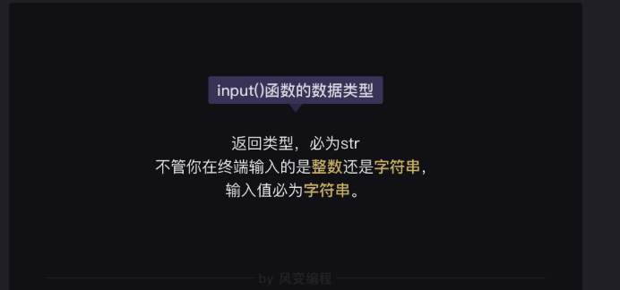
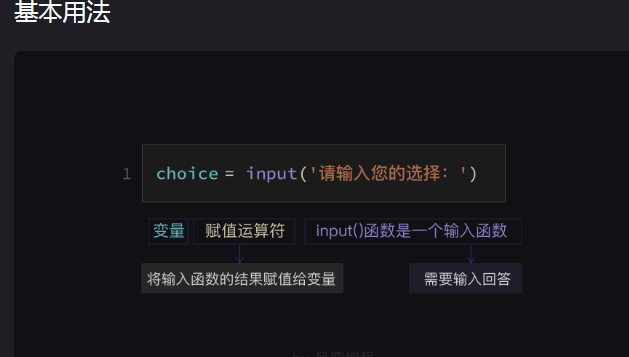

运用input函数搜集信息
input()函数结果的赋值
name = input('请输入你的名字：') #将input()函数的执行结果（收集的信息）赋值给变量name
input()函数的使用场景
1.函数结果赋值 name=input()
2.搜集信息 name=input(xxx)
3.输出结果 print(name)
——————————————————————————————————
input()函数的数据类型
input()函数的输入值（搜集到的回答），永远会被【强制性】地转换为【字符串】类型
choice = input('请输入1或2:')
print(type(choice))
<class 'str'>
—————————————————————————————————————
input()函数结果的强制转换
choice = int(input('请输入您的选择：'))
#将输入值强制转换为整数，并赋值给变量choice

